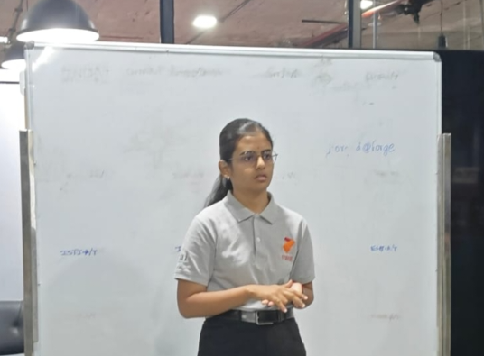
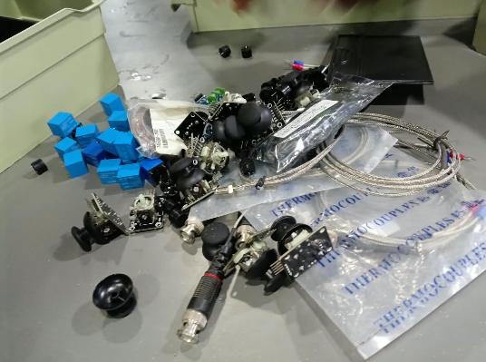
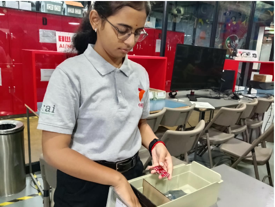
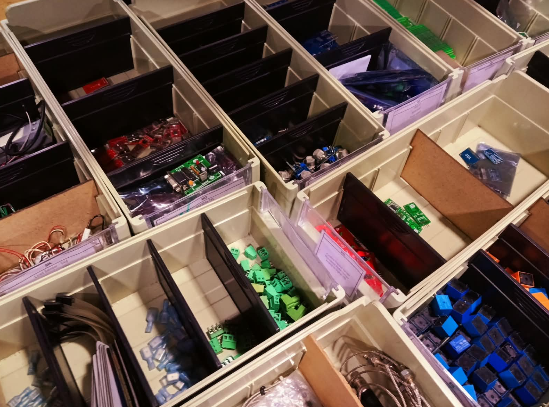

💡 Societal Problem Discovery & The 5S Revolution
The week launched with a high-energy, thought-provoking challenge: uncover genuine unmet gaps in society where no adequate solution currently exists. Instead of brainstorming solutions first, we immersed ourselves in problem spaces, systematically examining them through the dual lenses of technical feasibility and economic viability. Every team presented their curated ideas to the entire cohort.
The Problem: When families travel, accessing nutritious, age-appropriate food for toddlers, infants, and senior citizens is an enormous hurdle. While everyday food apps cater to households, travelers stuck at transit stations, railway junctions, and tourist destinations face rigid fast-food menus that conflict with medical restrictions or delicate digestions.
The Solution: A network of specialized Transit Food Points at key transit hubs and heritage tourist centers. Travelers pre-order customized, medically safe, and infant-friendly meals through an app ahead of arrival. The logistics sync with transport timing, delivering steaming, tailored food the moment they alight—eradicating agonizing wait times and dietary stress.

⚙️ Operational Excellence: The 5S Methodology
In the afternoon, our focus pivoted from societal ideation to operational discipline: 5S, the foundational Lean system pioneered by Toyota to cultivate safe, uncluttered, and peak-efficiency workspaces.
Ruthlessly separate essential tools from unneeded clutter. Discard items that lack immediate value.
- • Apply Red Tags to questionable items.
- • Quarantine items unused in 30 days.
- • Reclaim 40%+ wasted floor & desk space.
A place for everything, and everything in its place. Arrange tools for rapid retrieval and return.
- • Shadow boards & visual tape boundaries.
- • Color-coded component dividers.
- • Any item retrievable in under 30 seconds.
Cleanliness as continuous inspection. Cleaning exposes loose connections and equipment wear.
- • Daily 5-minute cleaning checkpoints.
- • Detect wire fraying & oil leaks early.
- • Prevents unexpected equipment breakdown.
Institutionalize visual controls, color codes, and standardized checklists across shifts.
- • Visual checklists posted at cubicles.
- • Consistent labelling schemes.
- • Transparent operational accountability.
Cultivate discipline, team accountability, and daily habits so excellence becomes second nature.
- • Weekly peer audits and scorecards.
- • Continuous micro-improvements (Kaizen).
- • Pride of ownership in the workspace.
🛠️ Putting 5S into Action: Lab & Cubicle Reorganization
Theory translated into immediate physical practice. We were assigned cluttered hardware workstations overflowing with tangled thermocouple sensors, loose blue relays, analog joysticks, microcontrollers, and BNC probes. Applying Seiri and Seiton, we categorized, labeled, and compartmentalized hundreds of hardware components into partitioned organizer bins.



5S is far more than physical housekeeping; it is a mental operating system. Removing friction from your physical desk or your digital codebase radically amplifies focus, speed, and creative bandwidth.